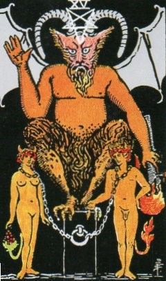
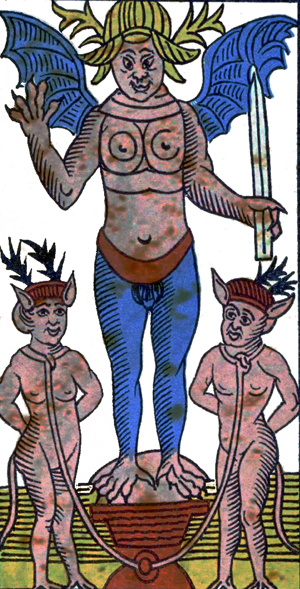
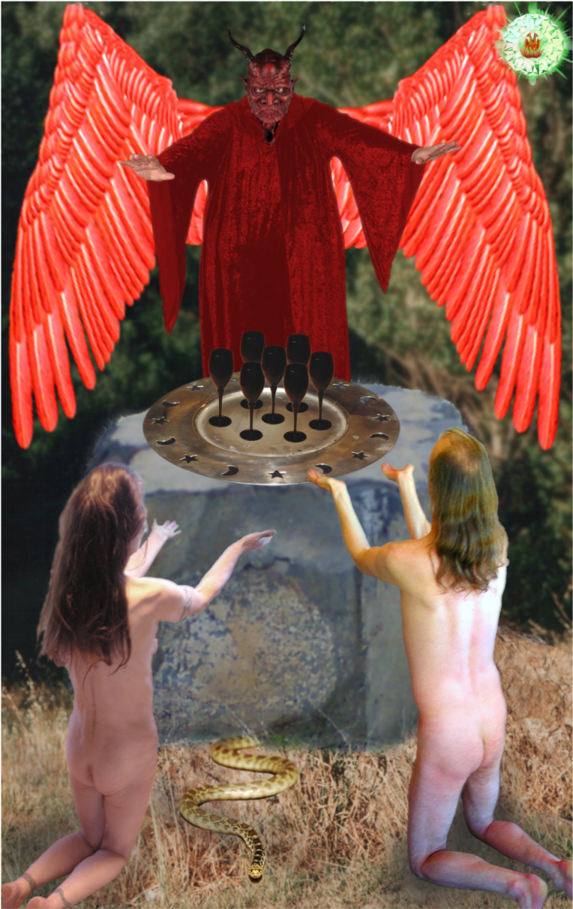
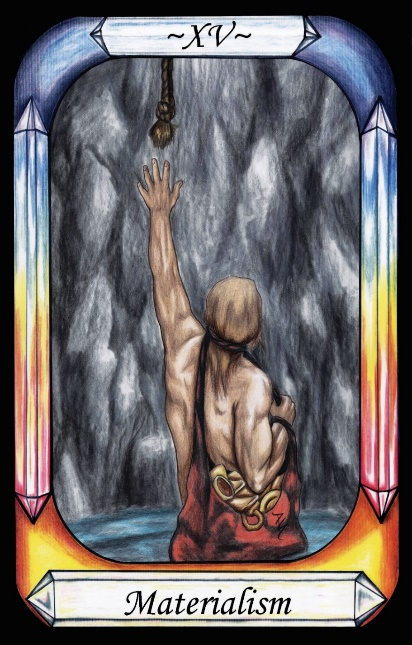
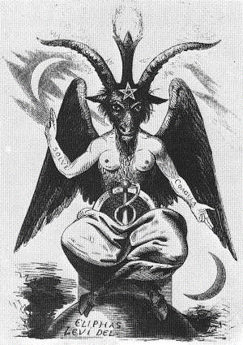

The Devil




Representation |
The Devil |
Meaning |
The Profane. The Devil torments those who focus on the body, through that body. |
Opposite card |
The Hierophant, representing holiness. |
Function |
The Devil is the negative aspect of the Demiurge, who sits on the throne of Fire and rules the material world. Our bodies keep us chained during life, and our souls may keep us here after Death, if the soul is not purified.
[P56] The Mind keeps distant from evil men, being replaced by the Devil [The Devil], who tortures them via their senses, and makes them more open to sin.
RWS Imagery
The Devil is drawn in the Baphomet style, with bat wings, goat horns, and satyr legs. An inverted pentagram rests on his forehead. He holds a burning torch upside down, indicating the fall from grace of Lucifer the Light-Bringer. A naked man and woman are chained to the stone block upon which the Devil sits. The woman has a tail bearing fruit, and the man has a tail with a fiery leaf. (Those leaf motifs are duplicated in the Lovers card). The clear implication is the temptation of Adam and Eve by the Devil. The card is one of two with a black background, along with the Tower. Greek Thanatos (Death) is said to hold an inverted burning torch representing the soul of the dead.
Pymander Interpretation
The Devil is not the torturer, as has been discussed under the Magician card. He is simply a representation of the nature of our presence in a world not meant for us.
Interpretation of RWS Imagery
The Waite deck has several visual references to Fire, indicating the Domain of Fire, the Domain of Operation, in which we live. Thus, there is also a reference to the Demiurge – he who sits on the throne of Fire.
Discussion
The Devil is traditionally considered to be the Father of Lies. He can never force a person into sin, but his use of untruths and partial truths allows him to manipulate people into sin, offering rationalisations as to why it will be acceptable. Thus the Devil represents lies and schemes of evil, the human nature to be returned to Mercury during the ascent.
The Devil card is difficult to analyse with precision because of a number of colliding mythologies –
The following image shows similarity between the Devil (Baphomet) and the Workman / Magician, by posture, but also makes reference to Mercury and his lies via the caduceus. Overall, Baphomet is more about Hermetic concepts such as polarities.

Figure 22 - Eliphas Levi's image of Baphomet
The significant message for the Devil card is that we become susceptible to glib reasoning and rationalisations through our material desires. The solution is to follow the path of righteousness, seeking to rise up towards God, through focus on our Spiritual nature and Soul, rather than on material issues.
To some extent, any of the other six vices of the Governors could also be represented by the Devil, as they were all added to man’s nature during the descent into the material world. Traditionally the Devil is associated with the title Father of Lies, hence Levi’s inclusion of Mercury’s Caduceus. For this book, the similarity to the Magician is more significant.
The Pymander was unearthed during the Renaissance as a document in Arabic, which was subsequently dated via linguistic analysis to somewhere in the second to fourth century AD. This was the time of the Gnostic Christians and the neo-platonists, and the Pymander seems to include a number of their common concepts. One of these is the separation between the God of light, the true God, and the false God of Fire who created the sensible world. The Pymander says that the light is infinite and unbounded, whereas the Fire is constrained to the domain of creation. Thus, we should not worship the creator, who is the workman and he who sits on the realm of Fire. Rather, we should worship the God of Light, who created the Demiurge.
Naturally, this concept can map to a number of “infernal” or Fire-based beings, such as Lucifer, Satan, the Antichrist, the Devil etc. The relationship of the Demiurge to these other concepts warrants further examination.
Lucifer
Lucifer was the Roman God of the Morning Star, the bringer of light, husband of Diana and father of Aradia, and not associated with the Fire. In Christian mythology he challenged the authority of God and was cast down from Heaven to the sensible world by the Archangel Michael. Thus there does not seem to be any significant correspondence to the Demiurge as portrayed in the Pymander.
Satan
The name Satan is likely to be a corruption of “Saturn”, who was father of Jupiter, and was cast down by Jupiter into Tartarus (hell) by Jupiter, in much the same way that Lucifer was cast down by Michael. As one of the seven Governors, it seems unlikely that the Pymander is referring to Saturn in his cast-down form, and so unlikely that there would be any correspondence between Satan and the Demiurge.
The name of Satan is also thought to be a title, rather than a name, and means “adversary”.
The Antichrist
In the Pymander, all beings operate according to God's will, and so there is no role corresponding to an antichrist, who opposes the will of Christ, the son of God. However, in the Gnostic philosophy, the Demiurge, being either confused or jealous of God’s love for humans, attempts to keep human souls trapped. If it is Christ’s purpose to show us how to free ourselves from the trap, then the Gnostic Demiurge is precisely the opposite of Christ, and so qualifies as the antichrist. This is not the case in the Pymander however.
The Devil
The Devil comes from the Arabic concepts of Demons or Daemons, who operate the world according to God's will. They are not evil, but have subsequently been branded so by the Christian church, as with most things non-Christian. The Pymander mentions the Devil specifically, saying that for those who focus on the Water and Earth aspects of human nature, the Devil torments them through their senses and emotions, whereas the mind of man (Fire and Air) lessens the impact of these torments. Thus we can make a reasonable mapping from the Demiurge to the Devil, but in more of a situational Greek tragedy than with evil intent. It is the nature of the world we trapped ourselves in to torment the earthly nature of our bodies, because we were never intended to be here. The Devil is therefore closer to the modern television role of Lucifer as a punisher of evil, and hence inherently on the side of good.
Thus we can attribute the Demiurge, the Magician, to a Devil who creates and rules over this sensible world, in accordance with God's will, and who torments people who focus on their lower natures instead of their higher. This also corresponds with the Gnostic concept that there is no Hell, that the sensible world is the place of torture, the prison from which we eventually escape back to Heaven via Death.
[P21] After learning all of this, Man wanted to break through the Governors’ spheres and to understand the Power of him that sits upon the Throne of Fire.
Thus the Magician is the Demiurge who is the creator and Master of the sensible world. He sits upon the Throne of Fire, not God but carrying out the will of God. Man also partakes of the Demiurges creative nature, and so the Demiurge is a partial model for human nature. He torments those who focus on their base nature, through their senses (Earth), and so to their emotions (Water).
It is interesting to note that there is a Devil in the Tarot and mentioned in the Pymander. These two can be considered to be two sides of the same coin – both the creator of the physical world, and our tormentor through the nature of that world, unless we can rise above.